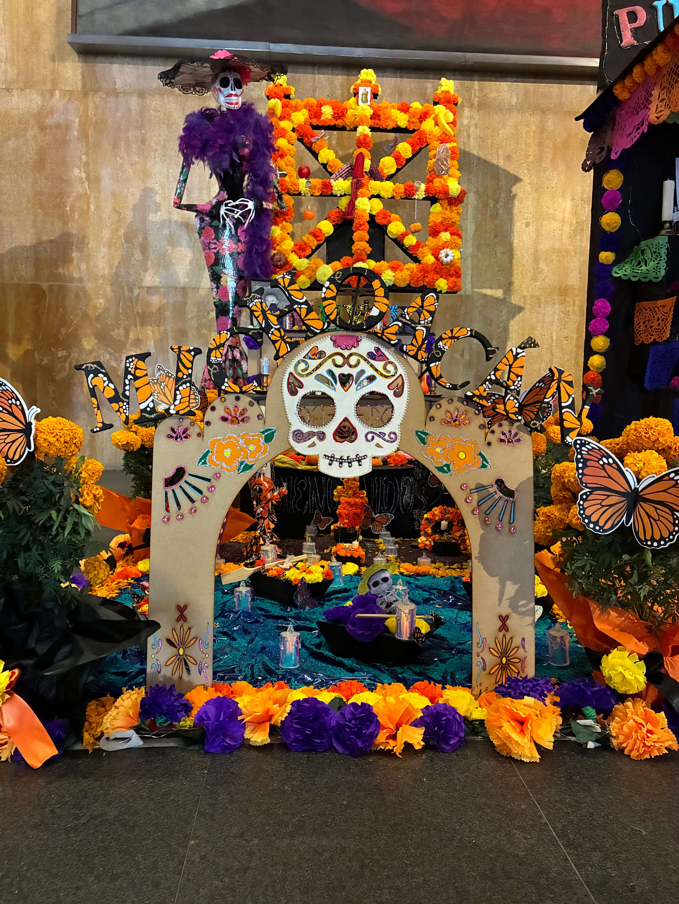
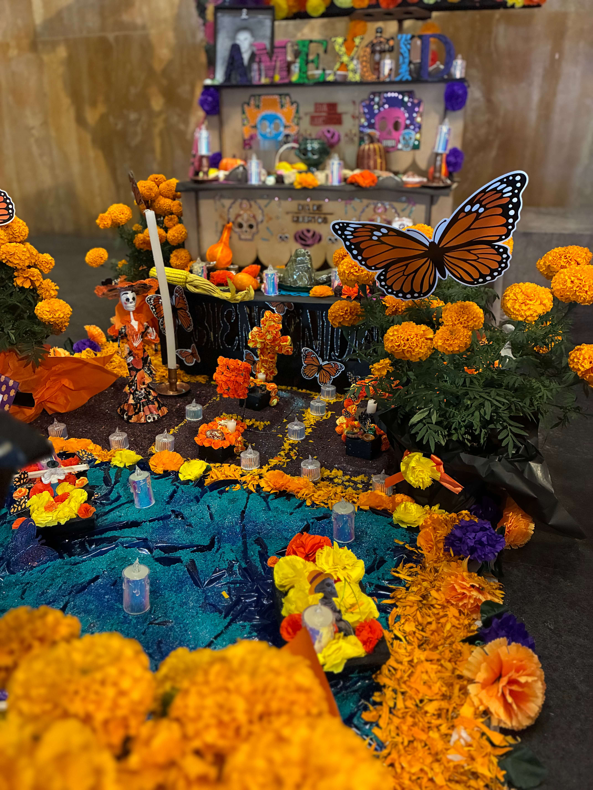
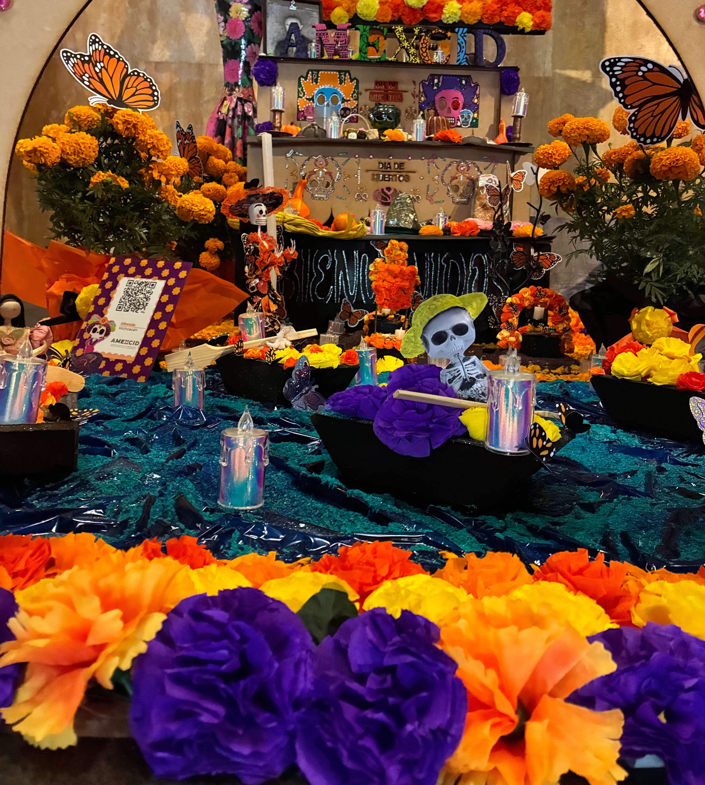
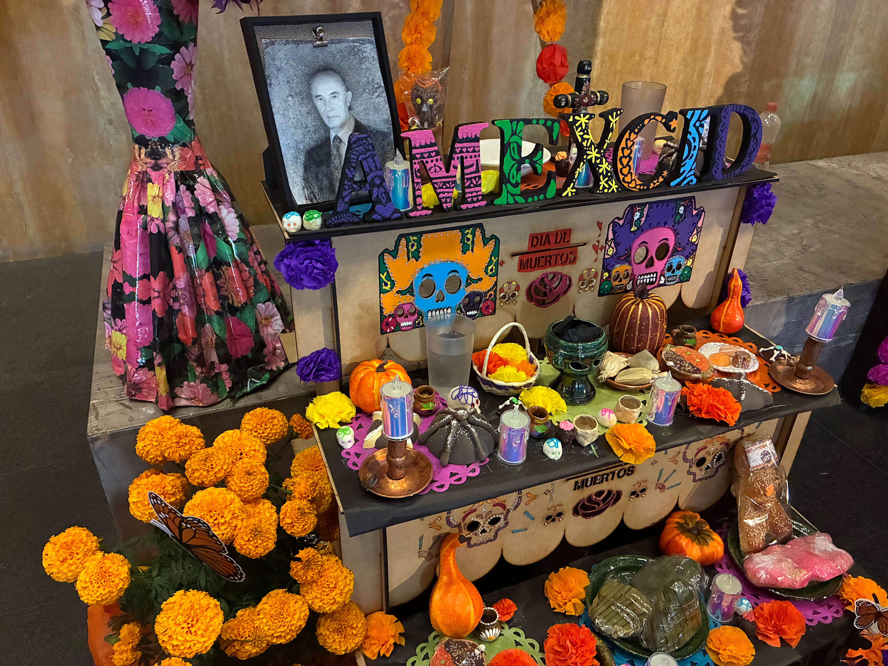
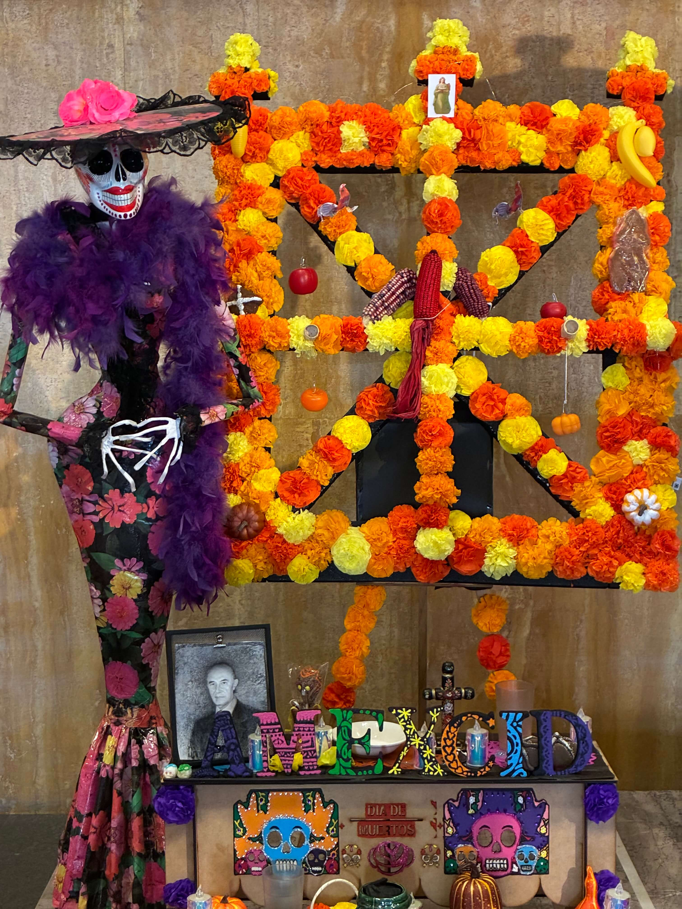

Ofrenda a las ánimas
Bienvenido a nuestra ofrenda. Un homenaje reverente a la noche sagrada de Janitzio y las almas que cruzan el lago en alas de la mariposa monarca.
Estructura:
Las tres cruces superiores del arco u’atsakurï representan el nivel celestial. Por este portal las almas reciben permiso para transitar hacia el plano terrenal. Convertidas en mariposas monarca, vuelan sobre el lago hacia Janitzio.
Aquí se espera a los difuntos con lo que disfrutaron en vida: frutas, corundas y pan de muerto, a veces con forma humana. Se sirven en barro verde, candeleros de cobre y catrinas de barro rojo hechas por artesanos de la región. El cempasúchil (tiringuini tzintziqui) y las velas iluminan el altar hasta el amanecer del 3 de noviembre.
Es el reino de la noche, donde yacen en silencio (uirucumani) quienes ya partieron, como Alfonso García Robles, cuya foto está en el altar. Cada 2 de noviembre cruzan hacia este mundo para convivir con sus parientes.
Perspectivas del Altar
Detalles y ángulos de nuestra ofrenda en Planta Baja.
 Vista Frontal
Vista Frontal
El arco, flores y mariposas

PerspectivaLas canoas, las mariposas y las tumbas

Espejo de AguaLas canoas y el camino iluminado

La OfrendaResplandor de cirios y velas

Fotografía capturada en el Lobby Central de Planta Baja durante el montaje ceremonial.
Elementos Sagrados
Elementos presentes en nuestra ofrenda física y su significado ancestral.
Para los purépechas representan a los ancestros que regresan a visitarlos en Día de Muertos, y en su lengua se les llama parákata. Su migración comienza en octubre y su llegada a México coincide con la fiesta.
Decora las tumbas en forma de cruz, con pétalos regados o dibujando corazones. En los altares también forma caminos de pétalos.
En Santa Clara del Cobre, el trabajo del cobre martillado tiene raíces prehispánicas. Sus artesanías ya cuentan con denominación de origen
Las primeras catrinas de barro de Capula aparecieron en los años setenta, cuando Juan Torres se inspiró en el personaje de Posada. Hoy hay alrededor de 250 talleres dedicados a ellas.
En la noche del 1 de noviembre, la gente navega en canoas iluminadas con velas hacia el panteón de Janitzio, donde rodea las tumbas con ofrendas y cempasúchil. En el Word se llaman icharutas o tirikua.
Es el portal por el que las almas reciben permiso para venir. Su forma de cruz une los cuatro puntos cardinales, y las tres cruces superiores representan el nivel celestial.
En México, la muerte también se recibe con una sonrisa.
A continuación, una calaverita escrita con mucho afecto por una compañera.
La Parca ya ronda por Ciencia y Tecnología,
buscando a Rebeca Haro con gran algarabía,
tu ciclo en esta dirección ya llegó a su fin,
te vas conmigo al panteón a tocar el violín.
Pero Rebeca, astuta, le dijo con gran soltura:
«No me lleves al hoyo, que voy a otra aventura,
prepara ya mis maletas, mi visa y mi equipaje,
¡que hasta la Embajada de la India voy a emprender mi viaje!».
La muerte quedó asombrada con tanto misticismo,
cambió su guadaña azteca por clases de hinduismo;
dejas la Ciencia y Tecnología por tierras del Taj Mahal,
allá te espero, Rebeca, a tu destino final.
Hoy los pasillos de Ciencia se quedan con gran tristeza,
despidiendo a la colega que viaja con gran presteza.
¡Buen viaje tengas, Rebeca, que el éxito te sonría,
mientras la Flaca te extraña aquí en Tecnología!
Animecha Kejtsïtakua
Significa "ofrenda a las ánimas" o "fiesta de las ánimas" en lengua purépecha. Es un solemne y ancestral ritual purépecha que celebra la vida más que la misma muerte.

El Origen de la Noche de las Ánimas
La historia comienza en tiempos de la conquista española. Mintzita, una bella princesa e hija de Tzintzicha, el último rey de Tzintzuntzan, estaba profundamente enamorada de Itzihuapa, el noble príncipe heredero de la isla de Janitzio e hijo del rey Taré.
Su amor era pleno y planeaban unirse en matrimonio, pero el destino cambió su rumbo de forma trágica. El despiadado conquistador Nuño de Guzmán capturó al rey Tzintzicha, exigiendo un rescate colosal de oro y riquezas a cambio de su vida.
Desesperada por salvar a su padre, la princesa Mintzita confió en Itzihuapa un secreto milenario: la existencia de un tesoro sagrado oculto por sus antepasados en el fondo del lago de Pátzcuaro, justo entre Janitzio y La Pacanda. Sin dudarlo, el valiente príncipe se ofreció a sumergirse en las aguas profundas para rescatar el oro.
Sin embargo, el tesoro no estaba desamparado. Al descender a los abismos del lago, Itzihuapa fue sorprendido por los espíritus de veinte antiguos remeros, quienes custodiaban la riqueza sagrada. Las sombras lo atraparon y lo sumergieron para siempre, convirtiéndolo en el vigésimo primer guardián de las aguas. Mintzita, rota de dolor, murió esperando el regreso de su amado.
La tradición cuenta que cada Noche de Muertos, al parpadear la primera luz de los cirios, el lago despierta. Los veintiún guardianes emergen de las profundidades y suben al panteón de Janitzio.
En esa noche mágica, las almas de Mintzita e Itzihuapa se reencuentran frente a las ofrendas. Mientras los vivos los honran con flores de cempasúchil, copal y cantos, los príncipes purépechas caminan juntos una vez más, recordándonos que el amor verdadero trasciende el tiempo y la muerte.
Diosï Meiamu (Gracias en Purépecha) por visitar nuestra ofrenda.